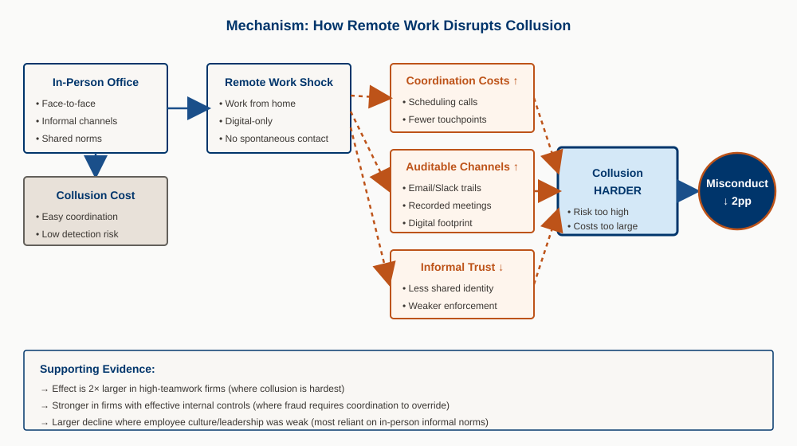

Abstract
Financial misconduct is usually a team activity. It depends on coordination among insiders—face-to-face interaction, informal trust, repeated contact. We use the sudden shift to remote work during COVID-19 to test how workplace organization affects collusion and fraud. We build a firm-level measure of work-from-home feasibility (from job postings and workforce data, mapped to O*NET teleworkability by occupation) and run a difference-in-differences design around 2020.
Firms that could operate more remotely experienced large post-2020 declines in misconduct. The result holds for Rule 10b-5 class actions, fraudulent restatements, and discretionary accruals; we measure misconduct in the year committed, not detected. The decline is consistent with remote work disrupting the “technology of collusion”: physical separation raises coordination costs, moves communication onto auditable channels, and weakens the informal glue that sustains illicit cooperation. Cross-sectional tests support this mechanism—stronger declines in teamwork-intensive firms, firms with effective internal controls (where fraud typically requires collusion to override safeguards), and firms with weaker pre-COVID employee perceptions of culture and leadership. Detection lags also fell for high-WFH firms, and we find no evidence that monitoring of financial reporting weakened. Overall, financial misconduct is sensitive to organizational structure; remote work made collusion harder and misconduct fell.
Key Findings
Declines in Misconduct
Firms with higher pre-COVID work-from-home feasibility saw large post-2020 declines in financial misconduct. The result appears across 10b-5 lawsuits, fraudulent restatements, and discretionary accruals, and is robust to alternative WFH measures.
Collusion, Not Monitoring
Fraud is a team activity. Remote work disrupts collusion—it separates potential co-conspirators, shifts talk onto auditable digital channels, and raises the cost of coordinating and sustaining illicit agreements. The data point to this mechanism rather than to a simple “weaker oversight” story.
Cross-Section: Where Collusion Mattered Most
The decline in misconduct is nearly twice as large in high-teamwork firms. It is also stronger in firms with effective internal controls (SOX 302/404), where overriding safeguards usually requires collusion, and in firms with weaker pre-COVID employee perceptions of leadership and culture—settings that relied more on in-person relational coordination.
Detection and Incidence
Detection lags fell: time from fraud onset to class-action filing dropped by approximately 52 percent for high-WFH firms after 2020. Discretionary accruals (a continuous misreporting proxy that does not depend on ex post discovery) also declined. We find no evidence that monitoring of financial reporting weakened for these firms. The pattern is consistent with a real drop in misreporting, not a change in detection.

Research Contribution
We show that financial misconduct is sensitive to how the firm is organized. Fraud is often collusive; remote work raises the cost of that collusion. The result is new evidence that the organizational setting—not only incentives and governance—has first-order effects on fraud, and that the feasibility of coordination shapes the incidence of misreporting.
We also introduce a firm-level measure of WFH feasibility (combining LinkUp job postings and Revelio Labs workforce data with O*NET teleworkability), which varies by firm even within industry and location. That measure strengthens identification and is of use for future work on how remote work affects firm behavior and capital markets.